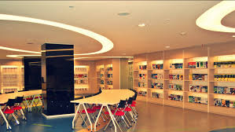

Sekolah sehat adalah perogram dimana sekolah menjadi tempat yang asik untuk para siswa, dimana semua siswa merasakan sekolah sebagai rumah mereka sendiri, dan betah jika berada di sekolah.
Dalam program ini semua sekolah di harapkan bisa menerapkan sistem green school yang menjadi program negara selama 5 tahun kedepan
Sehat, Cerdas, Terdepan
Pemetaan Sekolah Sehat

Daftar Guru Sekolah Sehat
Sekolah sehat mempunyai program di berbagai bidang dan yang menjaadi keunggulan sekolah sehat ini adalah Intilektuak, Pengembangan Kejiwaan, Pengembangan Daya Saing. sebenarnya masih banyak pembelajaran yang akan di pelajari dalam sekolah sehat ini, tapi faktor yang tiga lah yang akan menjadi keunggulan sekolah sehat.
1. Pelajaran Intelektual kita belajar bagaimana caranya pemikiran kita untuk menjadi orang sukses dalam beberapa tahun kedepan
2. Untuk pelajaran pengembangan jiwa kita belajar bagaimana kita mendekatkan diri kita kepada Allah SWT, agar tercapainya kejiwaan yang sesuai dengan ajaran agama
3. Adapun untuk pembelajaran pengembangan daya saing kita akan belajar bagaimana kita bersainga dalam kehidupan melenial ini, disaat kamu banyak godaan untuk hal negatif kamu akan diajarkan bagaimana menjadi seseorang yang siap untuk persaingan